Get a quick overview of classic stories.
Spoiler warning: This page discusses important events from the series.
Season 1 | Episode 1
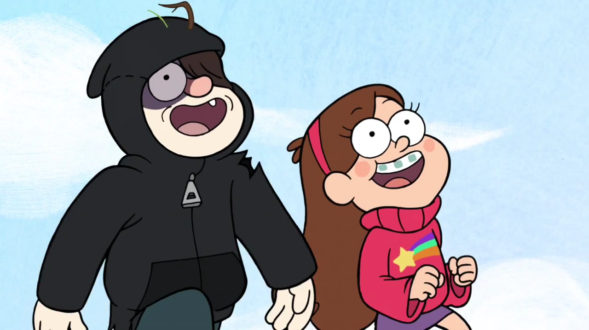
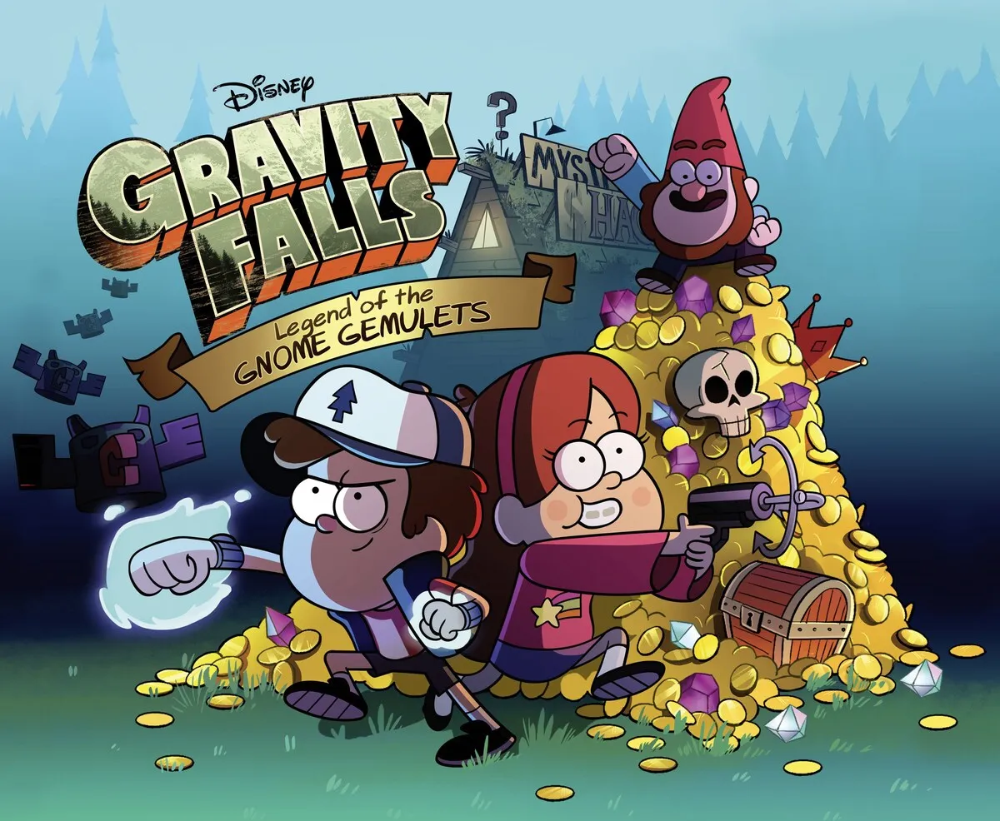
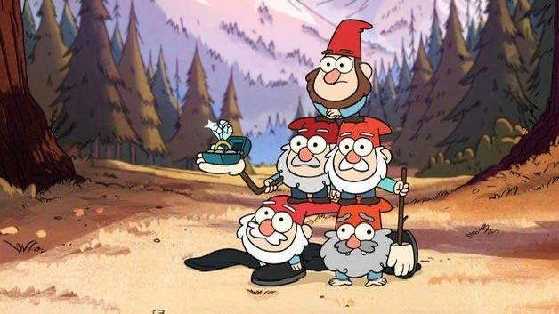
Dipper and Mabel arrive in Gravity Falls to spend the summer with Grunkle Stan at the Mystery Shack. While exploring the forest, Dipper discovers Journal 3, which describes the town’s supernatural creatures.
Mabel’s new boyfriend, Norman, turns out to be a group of gnomes disguised as a boy. Dipper tries to rescue her, and the twins work together to escape. Mabel finally defeats the gnomes using a leaf blower.
This episode introduces Journal 3 and confirms that the town’s supernatural mysteries are real. It also establishes the twins’ different personalities and shows that their teamwork will be central to the series.
My favourite detail is Mabel using a leaf blower against the gnomes. An ordinary object becomes an unexpected weapon, making the scene funny while showing her creativity and quick thinking.
Season 2 | Episode 10
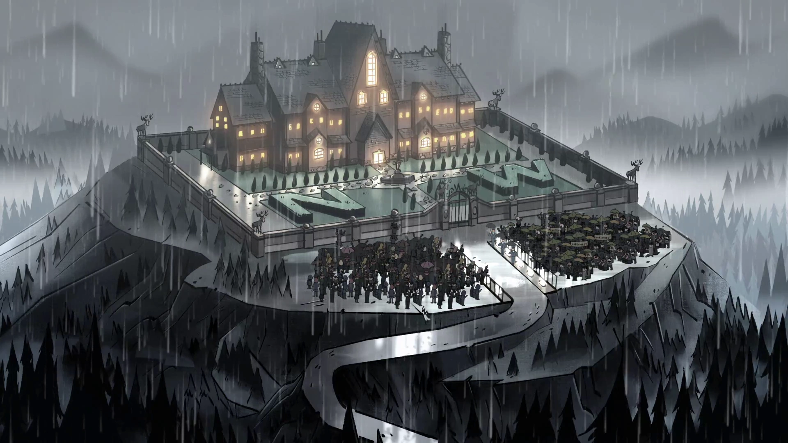
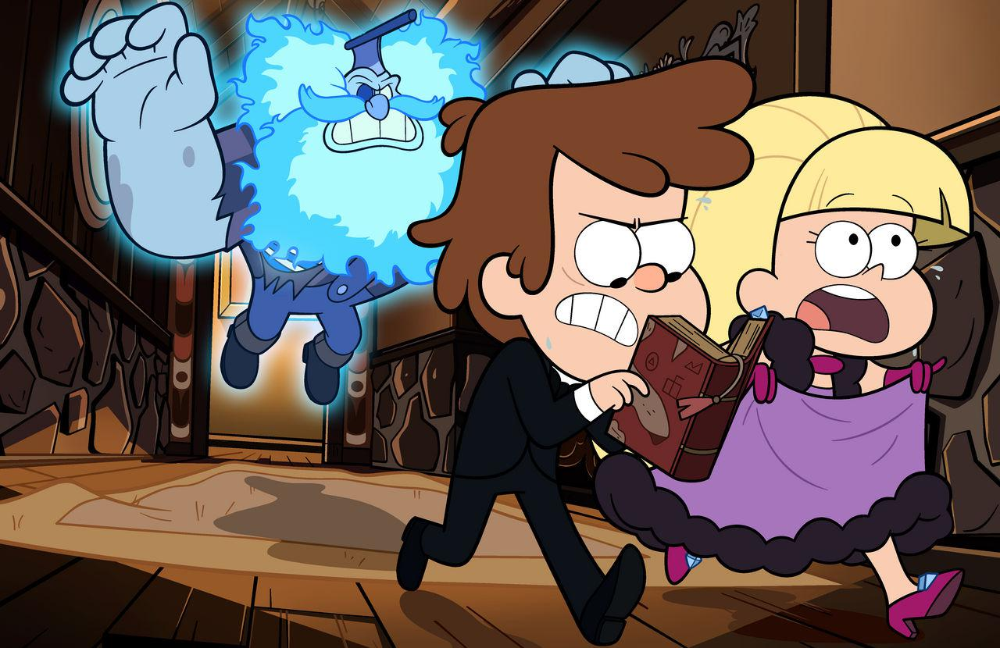
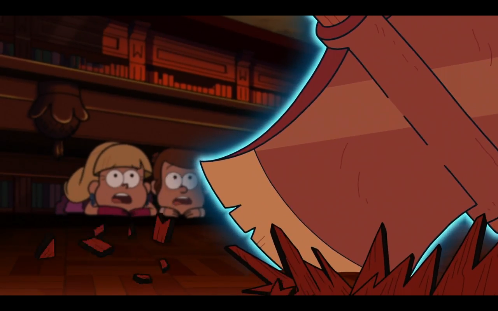
Pacifica asks Dipper to remove a ghost from her family’s mansion before an important party. Mabel attends the party with Candy and Grenda, while Dipper investigates the haunting.
Dipper discovers that the ghost wants revenge because the Northwest family broke a promise to welcome the townspeople. When the ghost threatens the guests, Pacifica defies her parents and opens the gates, ending the curse.
The episode shows that the town’s mysteries are connected to hidden history and human wrongdoing. Dipper uses his supernatural knowledge to investigate, while Pacifica begins to challenge her family’s values.
Season 2 | Episode 11
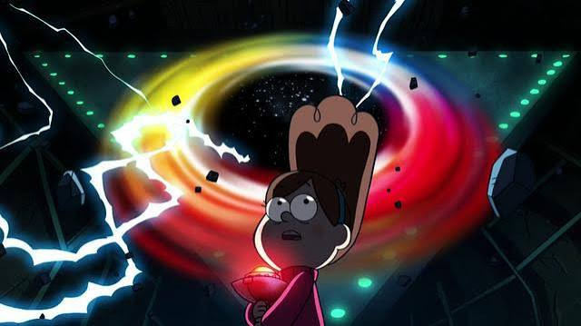
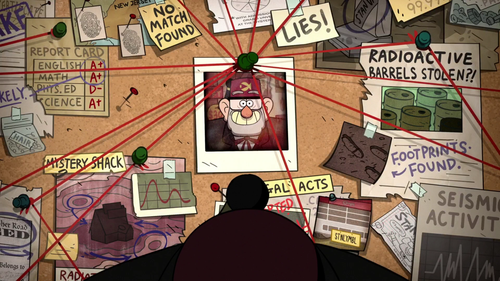
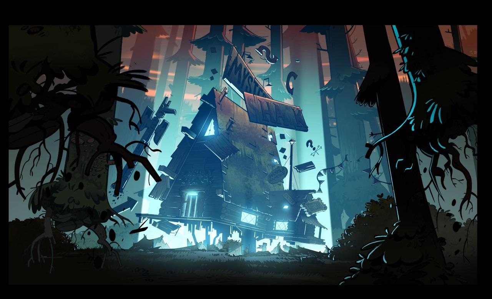
After Stan is arrested, Dipper and Mabel investigate the secrets he has hidden from them. They discover a powerful portal beneath the Mystery Shack and begin questioning whether they can trust him.
As the portal activates and gravity becomes unstable, Dipper wants to shut it down. Mabel chooses to trust Stan instead. The portal brings back Ford, Stan’s long-lost twin brother and the author of the journals.
This episode answers one of the series’ biggest questions: who wrote the journals? It also connects Stan’s secret activities to the portal and reveals that the central mystery is deeply tied to the Pines family.
My favourite detail is Mabel letting go of the shutdown switch while floating in the air. Her decision makes the suspense emotional because the outcome depends on her trust in Stan, rather than just solving a puzzle.
Season 2 | Episode 12
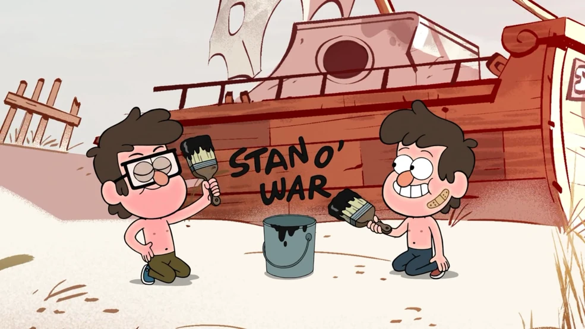
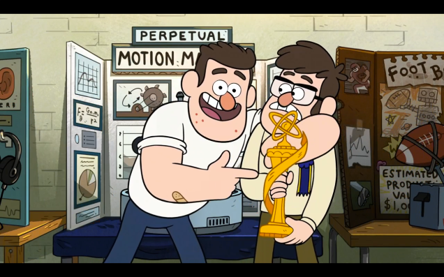
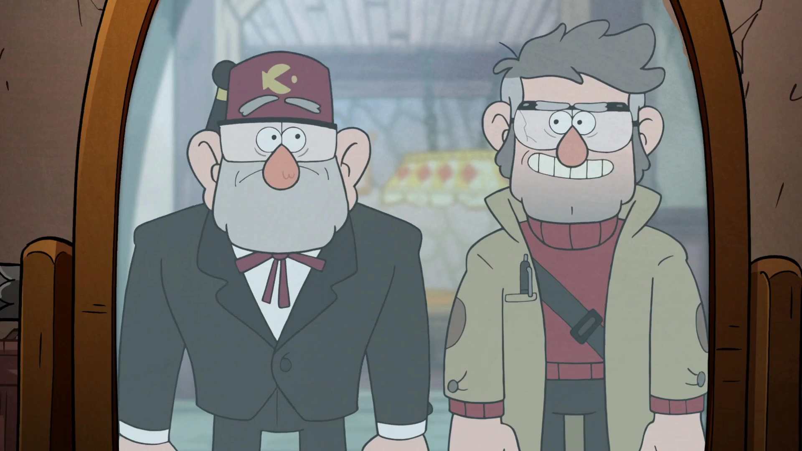
After Ford returns, Dipper and Mabel learn about the brothers’ past. Stan and Ford were close as children, but a damaged science project and growing resentment eventually separated them.
Years later, their argument caused Ford to fall through his own portal. Stan spent decades trying to bring him back. Hearing their story, Mabel worries that she and Dipper might also grow apart, but Dipper reassures her.
This episode explains how Ford’s research led to the journals and the portal. It also reveals why Stan created the Mystery Shack, turning the town’s supernatural mystery into a story about regret, loyalty, and family.
| Story | Main Characters | Main Theme |
|---|---|---|
| Tourist Trapped | Dipper and Mabel | Discovery and teamwork |
| Northwest Mansion Mystery | Dipper and Pacifica | Challenging family expectations |
| Not What He Seems | Dipper, Mabel, and Stan | Trust and secrets |
| A Tale of Two Stans | Stan and Ford | Family and regret |
This is a practice form. Your answers will not be saved.